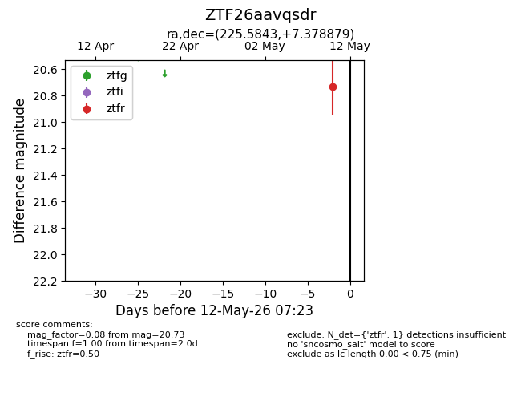
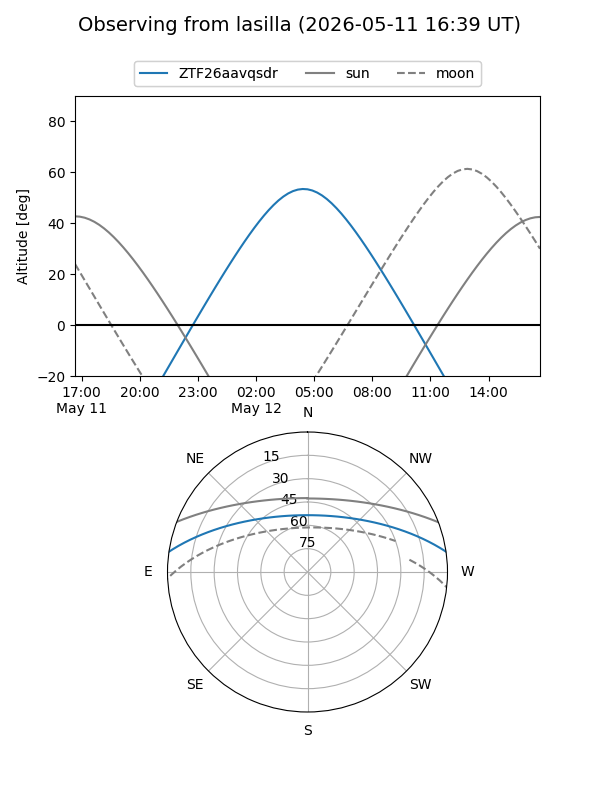
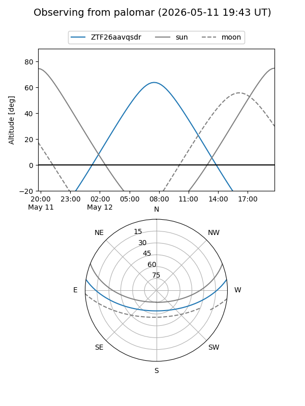

ZTF26aavqsdr
Target ZTF26aavqsdr at 2026-05-12 07:25
Aliases and brokers:
FINK: link
Lasair: link
ALeRCE: link
alt names
ZTF26aavqsdr (ztf,fink_ztf)
Coordinates:
equatorial (ra, dec) = 225.5843,+7.37888
equatorial (HMS+DMS) = 15:02:20.24,+07:22:43.96
galactic (l, b) = (6.5325,+53.23406)
Flags:
Photometry:
last ztfr=20.73
1 ztfr detections
Lightcurve

Visibility


Additional plots